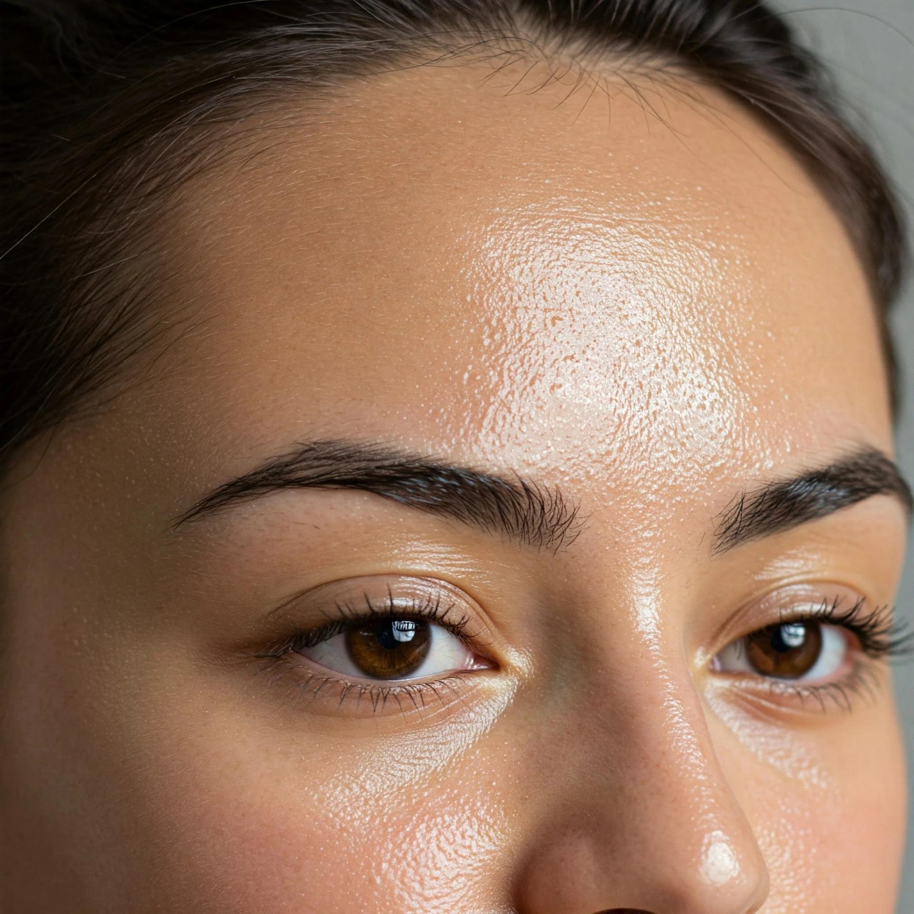
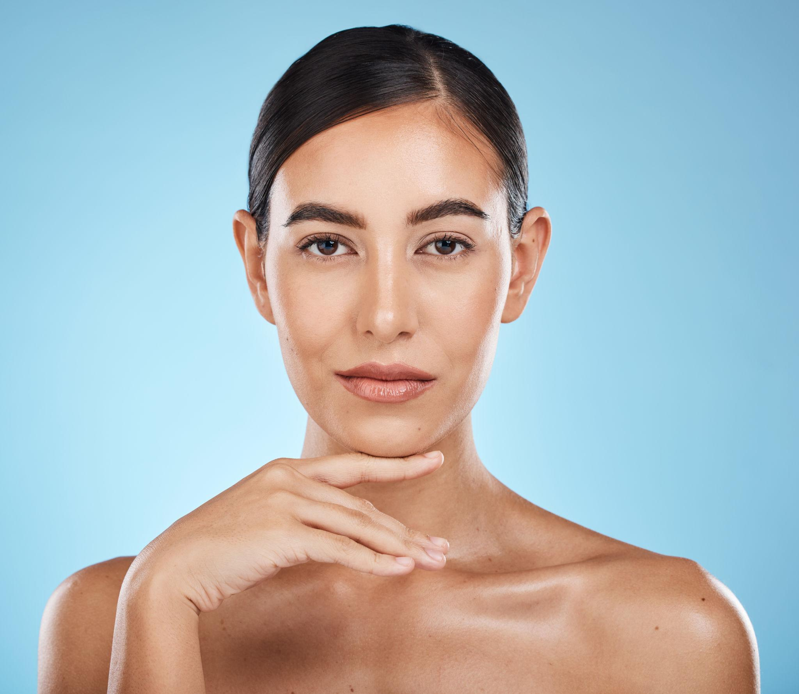
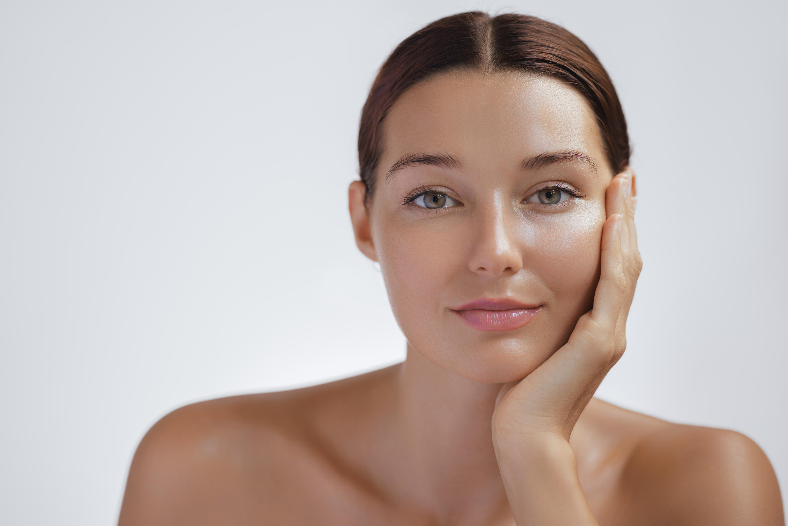
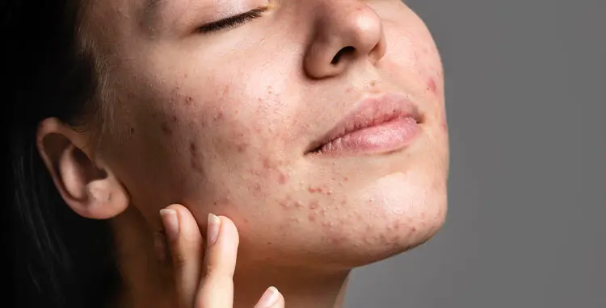

Conheça os tipos de pele
Descubra as características de cada tipo de pele.

Pele Oleosa
Apresenta brilho excessivo e maior produção de oleosidade.

Pele Seca
Pode apresentar ressecamento, descamação e sensação de repuxamento.

Pele Mista
Possui mais oleosidade na testa, no nariz e no queixo.

Pele com Acne
Pode apresentar cravos, espinhas e inflamações.